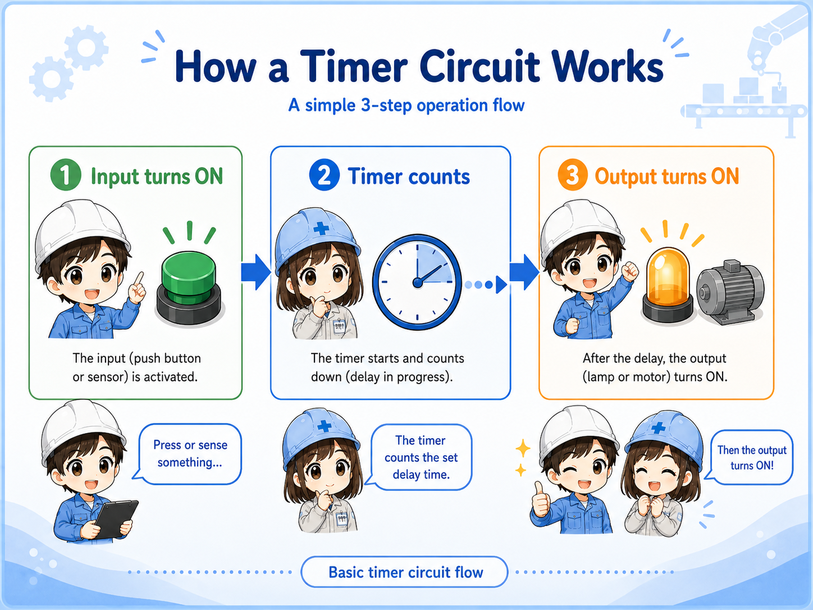
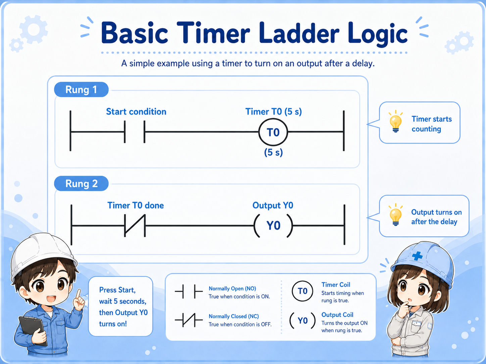
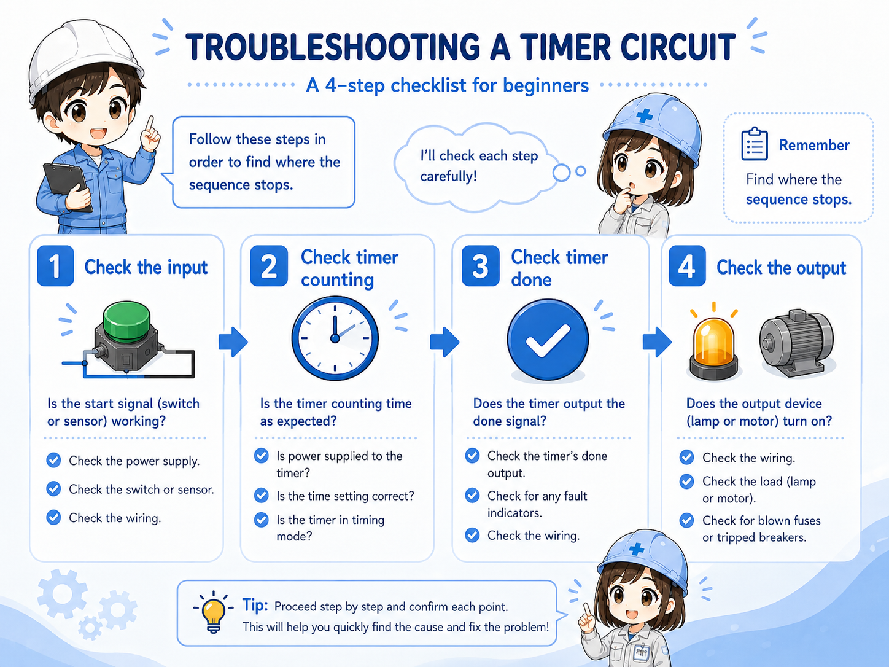

1. The basic idea: wait first, then operate
A timer circuit is a control pattern for adding a time delay between a condition and an action.
In a simple control circuit, an output may turn on as soon as an input turns on. A timer circuit adds one extra step. The input condition becomes true, the timer starts counting, and the output turns on only after the preset time has elapsed.
Short version: input ON → timer counts → preset time reached → output ON.
This is commonly called an ON-delay idea. The output does not turn on immediately. It waits for the timer to complete first.
- ON-delay
- Preset time
- Timer done
- Output delay

The easiest way to remember it
A timer circuit does not create the output by itself. It waits for a condition, measures time, and then allows the next output or operation to happen.

Senior
Do not think of the timer as just a number. Think of it as a condition that becomes true after time passes.

Junior
So the input starts the timing, and the output waits until the timer is done?
Senior
Exactly. That is the basic timing pattern you will see in many PLC and relay circuits.
2. How a timer circuit works step by step
The timing sequence becomes much easier when you separate it into three stages.
Input condition ON
A push button, sensor, mode signal, or internal condition turns on.
Timer counts
The timer starts measuring time while the condition stays true.
Output turns ON
When the preset time is reached, the timer done condition allows the output to turn on.
Field-friendly view
When checking a delayed operation, do not look only at the output. First check whether the input condition is present long enough for the timer to finish.
3. How timer logic appears in ladder circuits
The exact instruction names vary by PLC, but the beginner-level structure is similar.
In ladder logic, the first rung usually starts the timer when the input condition is true. Another rung then uses the timer's completion condition to drive an output.
This is a simplified learning example. In real work, the timer may be combined with stop signals, interlocks, mode selection, alarms, reset conditions, and safety-related circuits.

Important note
Different PLC brands and software tools may show timer instructions differently. Always follow the actual machine program and the manufacturer's documentation for the system you are working on.
4. Common examples of timer circuits
Timer circuits are common because machines often need a short wait before the next action.
| Example | What the timer does | Typical reason |
|---|---|---|
| Lamp delay | Turns on a pilot light after a condition stays on for a set time. | Avoids flickering or shows that a condition has continued long enough. |
| Motor start sequence | Waits before starting the next motor or output. | Helps separate machine actions in a predictable order. |
| Solenoid valve timing | Delays valve operation or holds a step before the next movement. | Allows mechanical motion, air pressure, or confirmation time. |
Do not overcomplicate it
Many timer circuits are just a controlled wait. The important part is knowing what starts the wait, how long the wait is, and what happens after the wait is complete.
5. Common beginner mistakes with timer circuits
Most timer problems come from misunderstanding the start condition, preset time, or reset behavior.
Input does not stay on
If the start condition turns off before the preset time is reached, the timer may reset or never finish.
Preset time is wrong
A wrong time value can make the output look too fast, too slow, or completely missing.
Timer done is not used
The timer may be counting correctly, but the output rung may not be using the completed timer condition.
Another condition blocks output
Interlocks, stop signals, mode conditions, or alarm resets can prevent the output even after timing is complete.
Watch the reset condition
Beginners often check only the preset time. In real troubleshooting, you also need to check what resets the timer and whether the timer is allowed to keep counting long enough.
6. Troubleshooting timer circuits
A clear troubleshooting order helps you avoid guessing.
When a delayed output does not work, split the problem into the input side, timer side, and output side. This makes it much easier to find where the sequence stops.
1. Check the input condition
Is the push button, sensor, or logic condition actually turning on?
2. Check timer counting
Does the timer start counting, and does it continue long enough to reach the preset time?
3. Check timer done status
When the preset time is reached, does the completed timer condition turn on?
4. Check the output side
If the timer is done, is the output command on? Is the load-side device actually operating?

Junior
If the output does not turn on, should I change the timer setting first?
Senior
Not right away. First check whether the timer is even allowed to count, and whether it actually reaches the done condition.
7. Practical safety notes
Timer circuits can make equipment move later than expected, so timing checks must be done carefully.
A delayed output can be easy to misunderstand during maintenance. Something may not move immediately, but it may operate after the timer finishes. Always follow your site rules, lockout/tagout procedures, drawings, and safety requirements before checking control circuits.
Keep learning in layers
Timer circuits become much easier after you understand inputs and outputs, NO/NC contacts, self-holding circuits, and basic ladder reading.